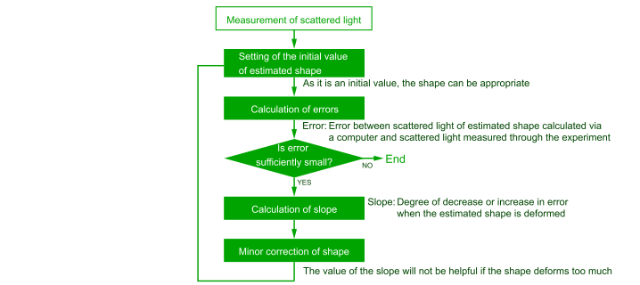
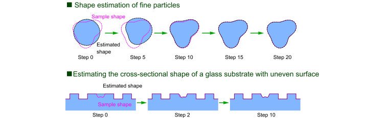

Object measurement system
Microscopes magnify objects. This is because the lens refracts the light from the object and creates an image larger than the original object. The magnification can be increased by combining lenses, but there is a limit to this, and creating an image of an object smaller than the wavelength of the light being shone is not possible. This is called the diffraction limit.
Many techniques such as radar and X-ray CT have been devised to estimate the shape of an object by processing the light (electromagnetic waves) from the object with a computer, and it is commonly referred to as the inverse scattering problem.
When X-rays are irradiated, if the object is very thin, the scattering and diffraction effects are small, making it relatively easy to estimate the shape of the object. If the object is not very thin, complex and intense scattering renders the estimation difficult.
In our laboratory, we run estimations using the “integral equation” which simply expresses the relation between the shape of an object and the scattered light. The calculations are repeated to progressively bring the estimated shape closer to accuracy.
A near-accurate shape can be estimated through several rounds of repeated processing. This object is of a size that cannot be measured with the resolution of a microscope, indicating that taking measurements beyond the diffraction limit is possible.